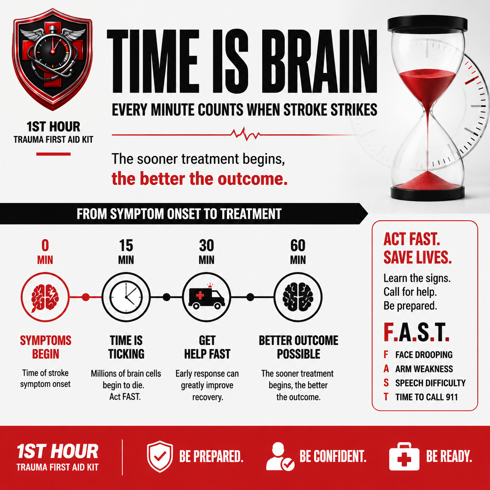
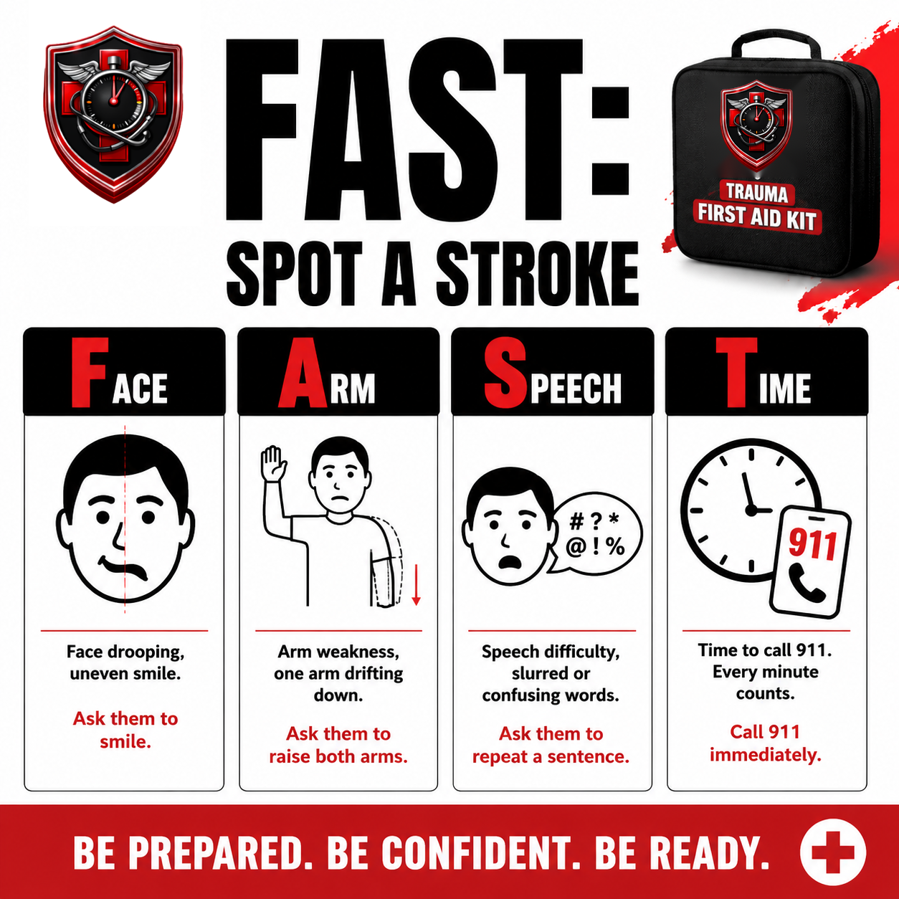

Stroke Recognition & Response
Stroke has nothing to bandage and nothing to pack. The only skill that matters is recognizing it fast enough — because "time is brain," and the clock starts the moment symptoms do.
1. Why the First Hour Matters
Stroke is different from every other protocol in this library. There's no wound to pack, no bleeding to stop, nothing to physically do to the person in front of you. The entire skill this book teaches is pattern-matching a handful of symptoms fast enough to act on them — because for stroke, more than almost any other emergency, time is brain.
During an ischemic stroke — the most common type, caused by a blocked blood vessel in the brain — brain tissue that isn't a direct target of the blockage still dies at a startling rate as surrounding circulation degrades. Researchers who study stroke timing have estimated that a typical large-vessel ischemic stroke costs the brain roughly 1.9 million neurons and 14 billion synapses every minute it goes untreated. Put another way: every hour of delay is estimated to age the affected brain tissue by the equivalent of roughly three and a half years.
That number matters for a practical reason, not just a dramatic one: the treatments that can actually reverse or limit stroke damage — clot-dissolving medication and mechanical clot removal — are only effective within a window measured from the moment symptoms started, not from when EMS arrives or when the person gets to a hospital. Clot-dissolving medication has historically been most effective within three to four and a half hours of symptom onset, and while newer imaging techniques can sometimes extend treatment options for some patients, no hospital can offer any of it if nobody knows when the clock started.

2. The FAST Test
FAST is the standard bystander test for stroke, used by the American Heart Association and stroke centers nationwide because it's fast to run and catches the large majority of strokes. It isn't just a mnemonic to memorize — each letter is a real, specific thing to look for in a real person.
Face Drooping
Ask the person to smile. Look for one side of the face drooping, sagging, or not moving the way the other side does — an uneven smile is the classic sign. It can be subtle: a slightly lower eyelid or corner of the mouth on one side counts.
Ask them to smile.
Arm Weakness
Ask the person to raise both arms straight out in front of them and hold that position. Watch for one arm drifting downward, or an inability to raise one arm at all while the other works fine.
Ask them to raise both arms.
Speech Difficulty
Ask the person to repeat a simple sentence back to you. Listen for slurred speech, words coming out wrong, or an inability to speak or understand what you're asking at all.
Ask them to repeat a sentence.
Time to Call 911
The moment any one of the three signs above is present — not all three, just one — it's time to call. Don't wait to see if it resolves, and don't wait to confirm the other letters first.
Call 911 immediately.

3. Less-Common Signs People Miss
FAST catches most strokes, but not all of them. Stroke doesn't always look like FAST — a meaningful share of strokes present first (or only) with symptoms that don't fit neatly into "face, arm, speech." Knowing these buys you the same head start FAST does, for the strokes FAST alone would miss.
- Sudden vision loss or double vision, in one eye or both — a curtain-like loss of vision, sudden blurriness, or suddenly seeing double with no warning.
- Sudden, severe headache with no known cause — often described as "the worst headache of my life." This is distinct from a typical migraine, which usually builds gradually and may be familiar to the person from past episodes.
- Sudden loss of balance or coordination — stumbling, dizziness severe enough to affect walking, or a sudden inability to coordinate movement that wasn't there moments earlier.
- Sudden confusion or trouble understanding speech — this is different from the speech difficulty in FAST, which is about producing words. This is about receiving and understanding them: the person seems unable to follow what you're saying or answer a simple question, even though their own speech may sound normal.
Some stroke organizations teach an expanded version of the test that folds these two signs directly into the acronym — BE-FAST (Balance, Eyes, Face, Arm, Speech, Time). Whether you learned FAST or BE-FAST, the signs and the response are the same — this book just separates them into two sections for clarity.
4. The Immediate Response Protocol
This is the sequence. The moment any FAST sign or any sign from Section 3 is present, this is what happens — in this order, starting immediately. Nothing in this sequence delays the 911 call for any reason.
- Call 911 immediately — and tell them the exact time. The instant you recognize a FAST sign or a sign from Section 3, dial. Don't pause first to finish checking every FAST letter, figure out what caused it, or see if it improves — dial first. As soon as you're connected, say "possible stroke," give the dispatcher your address or location, and tell them the exact time symptoms started (or the last time the person was known to be completely normal, if you didn't see it happen) — this is what hospitals call "last known well," and it's the number that determines treatment eligibility.
- While you wait for EMS, keep the person safe and calm. See Section 6 for exactly what that involves.
- Do not give the person food, water, or any medication — including aspirin. See Section 5 for why aspirin specifically can be actively harmful here, unlike with a heart attack.
- If the person loses consciousness or stops responding, reassess their breathing immediately and follow standard unresponsive-person guidance (recovery position if breathing, CPR if not and you're trained), and tell the 911 dispatcher right away — they can talk you through it in real time.
5. What NOT To Do
- Don't give food, water, or any medication — including aspirin. With a heart attack, aspirin is often recommended because it thins the blood and can help with a clot. A stroke is different: roughly 1 in 8 strokes (about 13%) is hemorrhagic (caused by bleeding in the brain, not a blockage), and giving a blood thinner to someone having a bleed can make it significantly worse. A bystander has no way to tell which type is happening — that requires brain imaging at a hospital — so the safe rule is: no aspirin, no exceptions, let EMS and the hospital make that call.
- Don't let the person drive themselves, and don't have someone drive them privately instead of calling 911. EMS can begin assessment in the ambulance and alert the receiving hospital's stroke team before arrival, so the hospital is already prepared the moment the person arrives — a private vehicle loses all of that lead time, on top of the risk of a stroke symptom (like sudden weakness or vision loss) making it unsafe for the person to drive at all.
- Don't wait to see if symptoms pass. Symptoms that resolve on their own can still mean a transient ischemic attack (TIA) — sometimes called a "mini-stroke" — which is a real medical emergency and a strong warning sign for a larger stroke soon after, not a reason to feel relieved and skip the call. Treat resolving symptoms exactly the same as ones that don't resolve: call 911.
6. Supporting Someone While You Wait
Once the 911 call is made, your job shifts to keeping the person safe and gathering information EMS will want on arrival.
- Keep them safe if they've fallen. Don't try to move them further than necessary — just clear the immediate area of hazards.
- Keep them calm. A stroke can be frightening and disorienting, especially if speech or understanding is affected. Speak calmly and reassure them help is coming, even if they can't respond normally.
- Note and be ready to report the exact times of symptom onset (or last known well) and of your 911 call — you already gave the first one to the dispatcher in Section 4, step 1.
- If you can gather it quickly without leaving the person alone, note their current medications and any known medical conditions — this helps the hospital, but never delay the 911 call or leave the person unattended to go find it.
- Watch for any change — improvement or worsening — and be ready to tell EMS what changed and when.
- Don't leave them alone if avoidable. If you must step away (to unlock a door for EMS, for example), make it brief.
7. Stroke vs. Its Common Look-Alikes
A couple of common, non-stroke conditions can produce symptoms that look a lot like a stroke to a bystander. The point of this section isn't to teach you to diagnose the difference — it's the opposite: to reassure you that calling 911 is always the right call, even if it turns out not to be a stroke.
| Condition | Can look like | What to do |
|---|---|---|
| Stroke | Face drooping, arm weakness, speech trouble, sudden vision/balance/confusion changes | Call 911 immediately, note the time |
| Low blood sugar (hypoglycemia) | Confusion, weakness, slurred speech, shakiness — can closely resemble FAST signs, especially in someone with diabetes | Call 911 if unsure — don't try to self-diagnose in the moment |
| Migraine with aura | Temporary vision changes, numbness/tingling, and occasionally speech difficulty, usually building gradually rather than striking suddenly | Call 911 if unsure — a first-time or unusually severe episode still warrants evaluation |
8. Special Situations
Stroke in children
Pediatric stroke is rare, but it happens, and it's frequently missed or diagnosed late precisely because bystanders and even some clinicians don't expect it in a child. The same FAST signs apply — don't assume a child's sudden facial asymmetry, arm weakness, or speech change is something else just because of their age. Call 911 the same way you would for an adult.
Someone with pre-existing speech or mobility differences
If the person already has speech difficulty, facial asymmetry, or limited mobility unrelated to stroke (from a prior medical condition, injury, or disability), don't dismiss new symptoms by comparing them to a "normal" baseline that was never true for them. What matters is a new, sudden change from their own baseline — a new drooping on a side that wasn't affected before, or a sudden change in speech pattern that's different from how they normally speak.
9. Climate & Demographic Notes
Stroke recognition and the immediate response don't change by geography — but where you live changes how much margin you have, and that's worth planning around ahead of time rather than discovering during an actual emergency.
10. When to Call 911
Call 911 immediately if you see:
- Any single FAST sign — face drooping, arm weakness, or speech difficulty — even just one, even if it seems mild.
- Any of the less-common signs from Section 3 — sudden vision changes, a sudden severe headache unlike any before, sudden loss of balance, or sudden confusion.
- Any suspected stroke, even if the symptoms already appear to be improving or have fully resolved by the time you're deciding whether to call.
Stay on the line if you can. Give the dispatcher the exact time symptoms started (or last known well) as early in the call as possible — it's one of the first things a stroke-trained dispatcher and the responding crew will want.
11. Aftercare & Follow-Up
Once EMS has taken over, a few things are worth knowing about what happens next and why your information still matters.
- At the hospital, time-based treatment decisions continue. Clot-dissolving medication and mechanical clot removal both have windows measured from the time you reported — this is exactly why noting and relaying that exact time in Sections 4, 6, and 10 mattered as much as it did.
- Keep reporting exact times and symptoms, even after EMS arrives. If anything changed while you were waiting (a new symptom, an improvement, a loss of consciousness), tell the receiving team, not just the first responders — it can affect ongoing treatment decisions.
- Stroke recovery is often a longer process than the emergency itself. Supporting someone through recovery may mean helping with follow-up appointments, rehabilitation therapy, and adjusting to any lasting effects — at a level this guide doesn't try to cover in depth, since it's specific to each person's outcome and best handled with their care team.
- It's normal to feel shaken afterward. Witnessing a stroke and having to act fast is intense even when everything goes right. Don't hesitate to talk to someone about it.
12. What To Have Ready
This book doesn't have a supplies checklist the way the trauma-focused protocols do — there's no physical intervention to stock gear for. What actually helps is being ready to act the moment you recognize a sign, without fumbling for basics.
- A charged phone, easily reachable — Section 4, step 1. The 911 call happens immediately; you can't afford to be searching for a phone or a charger.
- A clock, watch, or your phone's clock — Sections 1 and 4, step 1. Noting the exact time symptoms started is the single most important piece of information in this book.
- The person's medication list or known medical history, if quickly accessible — Section 6. Helpful for EMS and the hospital, but never worth delaying the call or leaving the person alone to go find it.
- Your address or location information — Section 4, step 1. One of the first things the 911 dispatcher will need from you.
13. Your State: Good Samaritan Protections
Every U.S. state has some form of Good Samaritan law — legal protection for people who provide reasonable emergency assistance in good faith, without expectation of payment. Recognizing a stroke and calling 911 is exactly the kind of good-faith emergency action these laws are designed to protect; you are not expected to diagnose, treat, or do anything beyond what's described in this guide. The exact wording, what's covered, and any exceptions vary by state and change over time — this is general information, not legal advice. See the full disclaimer below.
14. Medical Disclaimer
This guide is for general educational purposes only and does not constitute medical advice, diagnosis, or treatment. It is not a substitute for professional medical care, emergency medical services, or a certified first aid, CPR, or stroke-recognition course, which we strongly recommend taking in person.
In any real emergency, call 911 (or your local emergency number) immediately. Nothing in this guide should delay that call.
The Good Samaritan law information in Section 13 is general information, not legal advice. Laws vary by state, change over time, and may have exceptions not covered here. Consult a licensed attorney in your state for guidance on your specific situation.
1st Hour and its parent company make no warranty, express or implied, regarding outcomes from applying the information in this guide, and disclaim liability for actions taken based on its contents to the fullest extent permitted by law.
Editor's note: this edition reflects content as of August 24, 2026. 1st Hour periodically revises protocol guides as best practices evolve — visit 1sthourprotocols.com/stroke-response for the current edition.